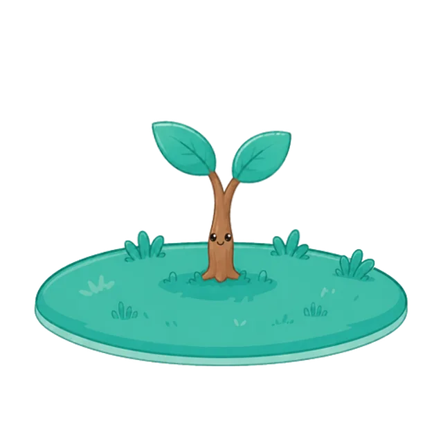

Habit Now is a habit tracker with a tree living in it. Keep a habit and
it grows. Skip too many days and it wilts. Ten stages, about fifty days
to the top.
Free to use. The tree, all ten stages, the health system and every
achievement cost nothing.
Keep going — I'm only a sprout

Level1
Experience points
Every habit you keep is one day of sun.
One completion, one point. Five in a day is an ordinary day, and an
ordinary day is enough. Each habit pays out once per day and once
only — there's no farming it by unchecking and checking again.
Health
When you stop, I notice.
Miss enough days and the colour goes out of me. Nothing is deleted and
nobody gets a lecture — the tree just shows how the last two weeks
actually went. Come back and it comes back.
Achievements
Stay a while and things move in.
Twenty-four achievements, each one a bird, a flower, a squirrel that
takes up residence in the branches. They're cosmetic, and they aren't
for sale at any price. Earning them is the only way in.
Stage ten
Fifty days. Look at me.
Ten stages at an ordinary pace. Nothing waits at the end except a tree
you'd rather not let wilt — which, as motivation goes, has held up
better than a number going up.
Under the tree
A habit tracker that holds up on its own
The tree is the reason people come back. This is the part that has to
be worth coming back to.
Good evening
23 day streak 🔥
Drink water1 / 3 glasses 🔥 12
Read1 / 3 pages 🔥 6
No smoking9 days clean
Habits to build, habits to quit
Tick a box or count to a target. Quit habits track days clean instead of streaks, and they get their own warmer palette so the two never blur together.
Reminders, uncapped
Every habit can carry a reminder, on the free tier too. Capping notifications was considered and rejected — a habit tracker that won't remind you is a list.
Streaks, heatmaps, real history
Per-habit calendars and completion trends. Streaks are computed from your history, never stored, so they can't drift out of sync with what you actually did.
Watering cans
A day off that doesn't cost you the streak. One a month free, three on Pro, applied automatically to the day you missed.
A home screen widget
Your tree and today's list, without opening anything.
Works offline, syncs when asked
Everything lives on the device first. Sign in and Pro keeps it mirrored across your phones.
The coach · Pro
On Sundays I write to you.
One thing noticed, not a summary of your week. It reads your actual
history and looks for the pattern you're too close to see — then, only
when the note calls for it, offers the one change that would follow
from it.
You almost always end up reading on the days you get out for a morning
walk. Could be the fresh air, or that once you start moving you keep
going. It's a nice pairing — your walks are quietly making your
evenings stick.
A real note from the app's coach, unedited, written about an example
user with two habits: Read and Morning walk.
Pricing
Free, and Pro
The loop that makes the app worth having — habits, the tree, its
health, achievements — stays free. Pro buys room, history and
convenience.
Free
Up to 5 active habits
All ten tree stages, growth and health
All 24 achievements and their ornaments
Unlimited reminders
Streaks and the current week's stats
One watering can a month
Pro
Unlimited habits
All 13 backgrounds
Full stats history, heatmaps and trends
Cloud sync across devices
Home screen widgets
Weekly and monthly schedules
Three watering cans a month
The Sunday note from your tree
Plant it tonight.
Tomorrow morning you'll have something to keep alive.